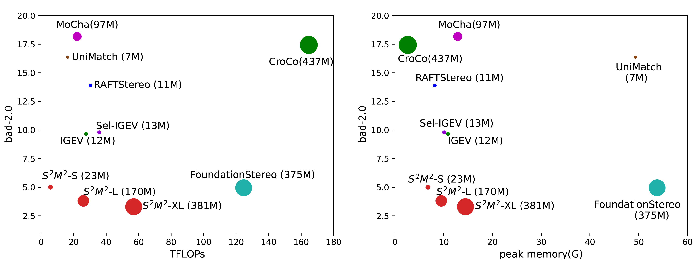
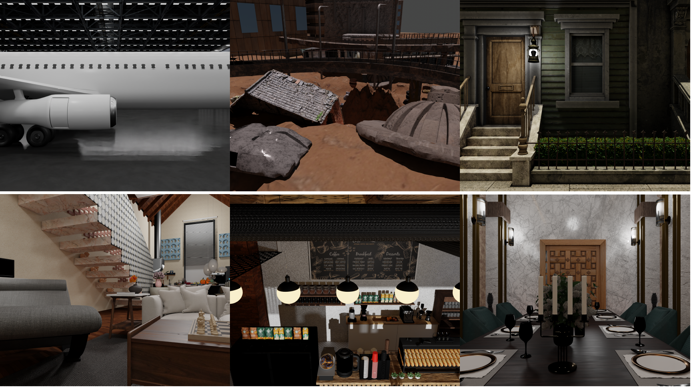
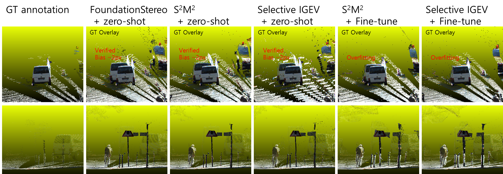

ICCV 2025
S2M2: Scalable Stereo Matching Model for Reliable Depth Estimation
Junhong Min1*, Youngpil Jeon1, Jimin Kim1, Minyong Choi1
1Samsung Electronics
*Corresponding Author
Figure 1: Qualitative comparison of 3D point clouds. Compared to SOTA models (Selective-IGEV, FoundationStereo), our model shows more reliable reconstructions in fine structures like bicycle spokes.
Abstract
The pursuit of a generalizable stereo matching model, capable of performing well across varying resolutions and disparity ranges without dataset-specific fine-tuning, has revealed a fundamental trade-off. Iterative local search methods achieve high scores on constrained benchmarks, but their core mechanism inherently limits the global consistency required for true generalization. However, global matching architectures, while theoretically more robust, have historically been rendered infeasible by prohibitive computational and memory costs. We resolve this dilemma with S2M2: a global matching architecture that achieves state-of-the-art accuracy and high efficiency without relying on cost volume filtering or deep refinement stacks. Our design integrates a multi-resolution transformer for robust long-range correspondence, trained with a novel loss function that concentrates probability on feasible matches. This approach enables a more robust joint estimation of disparity, occlusion, and confidence. S2M2 establishes a new state of the art on Middlebury v3 and ETH3D benchmarks, significantly outperforming prior methods in most metrics while reconstructing high-quality details with competitive efficiency.
Motivation & Objective
Prior stereo matching models struggled to generalize across diverse input conditions. Attempts to scale models often led to inefficiencies, revealing a need for a more adaptable solution. We aim to develop a unified architecture that achieves:
- Input Scalability: Robust performance across varying image resolutions and disparity ranges.
- Model Scalability: Consistent performance gains with increased model capacity.
Highlights
- A Highly Scalable Global Matching Architecture: A multi-resolution Transformer architecture scalable in terms of both input (high resolutions, large disparities) and model size.
- Accurate and Reliable Depth Estimation: A novel loss function that boosts disparity accuracy, while the joint estimation of confidence and occlusion ensures final depth reliability.
- New SOTA and a Rigorous Validation Framework: State-of-the-art performance on established real-world benchmarks, and a novel synthetic dataset to validate robustness in scenarios unaddressed by existing benchmarks.
Method
Our proposed model, S2M2, is designed to revitalize the global matching paradigm by addressing its long-standing scalability challenges. To achieve this, our architecture is composed of four main stages, as illustrated in the figure below: (1) Feature Extraction, (2) Global Matching, (3) Refinement, and (4) Upsampling.

Figure 2: Overview of the S2M2 architecture. It consists of a hierarchical feature extraction stage with a Multi-Resolution Transformer (MRT) and an Adaptive Gated Fusion Layer (AGFL), a global matching stage using Optimal Transport, and iterative refinement and upsampling stages.
Key Components
- Multi-Resolution Transformer (MRT): Employs a hybrid attention strategy—horizontal 1D attention at high resolutions and 2D attention at the coarsest level—to strike a critical balance between performance and computational cost.
- Adaptive Gated Fusion Layer (AGFL): Acts as a dynamic gate to selectively fuse features across different scales, ensuring a powerful and coherent multi-scale representation.
- Optimal Transport for Global Matching: Establishes robust long-range correspondences by finding a globally optimal transport plan, making it robust to ambiguities like occlusions and repetitive patterns.
- Probabilistic Mode Concentration (PMC) Loss: Our model is trained with a composite loss function that combines standard L1 losses with our novel PMC loss. Since global matching is performed on 1/4-downsampled features, a more direct mechanism is required to guide the matching probabilities. PMC loss directly regularizes the matching probability distribution, encouraging it to concentrate on valid disparity candidates, which boosts accuracy and enables confident predictions.

Illustration of our Probabilistic Mode Concentration (PMC) Loss.
Results
3D Visualization Comparison (Middlebury)
Bicycle Comparison
FoundationStereo
S2M2 (Ours)
Staircase Comparison
FoundationStereo
S2M2 (Ours)
Performance on Transparent/Reflective Objects (Booster)
Barrel
Bottles
Lid
Benchmark Performance
S2M2 establishes a new state-of-the-art on diverse and challenging benchmarks. As of July 2025, it ranks first on both the ETH3D and Middlebury v3 leaderboards. In October 2025, it also achieved the top rank on the Booster benchmark.


Comprehensive evaluation on ETH3D (Bad-0.5) and Middlebury v3 (Bad-2.0). Lower is better. Circle size indicates model parameters.
Scalability Analysis
Our S2M2 family forms a compelling Pareto front, offering significantly better performance at every level of computational budget and validating the scalability of our architecture.
Accuracy vs. Efficiency (Synthetic Benchmark). The S2M2 family (red) achieves higher or comparable accuracy with significantly less computation than larger models like FoundationStereo (cyan).
Our High-Resolution Synthetic Dataset
To rigorously test our model, we created a new high-resolution synthetic dataset using Blender. This dataset includes challenging scenarios like complex objects, reflective surfaces, and large disparity ranges, which are often not covered by existing benchmarks.
Overview of our high-resolution synthetic data generation using Blender.
Critical Re-evaluation of the KITTI Benchmark
We argue that the KITTI benchmark's leaderboard scores are an unreliable indicator of true generalization due to the inherent noise and systematic biases in its LiDAR-based ground truth. Our analysis shows a contradiction: while fine-tuning on KITTI improves error metrics like EPE, it simultaneously degrades photometric consistency (measured by SSIM), suggesting overfitting to dataset artifacts.
Figure 5: Negative effects of fine-tuning on KITTI. Zero-shot models (FoundationStereo, S2M2) reconstruct clean 3D structures, whereas fine-tuned models adapt to noise in the GT annotation, resulting in distorted geometry.
Citation
@inproceedings{min2025s2m2,
title={{S\textsuperscript{2}M\textsuperscrip{2}}: Scalable Stereo Matching Model for Reliable Depth Estimation},
author={Junhong Min and Youngpil Jeon and Jimin Kim and Minyong Choi},
booktitle={Proceedings of the IEEE/CVF International Conference on Computer Vision (ICCV)},
year={2025}
}